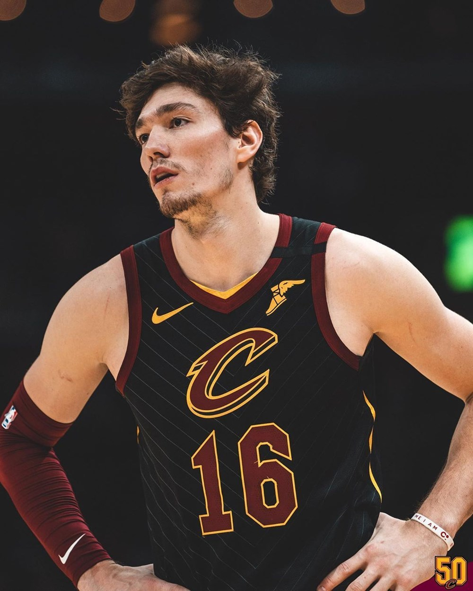

LeBron Raymone James (İngilizce telaffuz: [ləˈbrɒn]; d. 30 Aralık 1984), NBA takımlarından Los Angeles Lakers'ta forma giyen Amerikalı profesyonel basketbolcu. NBA tarihinin en önemli basketbolcularından biri olarak kabul edilir.
2,06 m (6 ft 9 in) boya ve 113 kg (249 lb) ağırlığa sahip olan James, çoğunlukla kısa forvet ve uzun forvet pozisyonlarında görev yapsa da gerektiğinde 5 pozisyonda da oynayabilmektedir. Kariyeri boyunca 4 kez NBA şampiyonluğu, 4 kez NBA En Değerli Oyuncu Ödülü, 4 kez NBA Finalleri MVP Ödülü, 2 kez Olimpiyat altın madalyası, 1 kez NBA Sayı Kralı, 1 kez NBA Asist Kralı ve NBA Yılın Çaylağı Ödülü kazandı. Diğer başarıları arasında 10 kez NBA All-Star ile Yılın Beşi ve 6 kez ise Yılın Savunma Beşi bulunmaktadır. Ayrıca Cleveland Cavaliers'in tüm zamanlar skor lideridir ve kariyerinde çıktığı 266 maçla NBA Playofflarında en fazla maça çıkmış oyuncudur
CEDİ OSMAN
Cedi Osman, (d. 8 Nisan 1995, Ohri, Makedonya), NBA takımlarından Cleveland Cavaliers forması giyen Türk profesyonel basketbolcu. 2.01 boyundaki basketbolcu kısa forvet pozisyonunda görev alsa da gerektiğinde şutör gard ve uzun forvet pozisyonlarında da oynayabilmektedir. 2015 NBA Draftı'nda Minnesota Timberwolves tarafından 2. tur 1. sırada seçildi.18 Temmuz 2017 tarihinde NBA takımı Cleveland Cavaliers ile sözleşme imzaladı. 25 Ocak 2019 tarihinde Miami Heat karşısında oynadığı maçta 29 sayı atarak NBA'deki kariyer rekorunu kırdı. 7 Mart 2019 tarihinde oynanan Brooklyn Nets maçında ise NBA'deki 1000 sayı barajını aştı.

KOBE BRYANT
Kobe Bean Bryant (23 Ağustos 1978; Philadelphia, Pensilvanya - 26 Ocak 2020; Calabasas, Kaliforniya), lakabı Black Mamba, NBA takımlarından Los Angeles Lakers'ın formasını giymiş Amerikalı profesyonel basketbolcu. 1.98 boyunda olan Bryant şutör gard ve kısa forvet pozisyonunda görev almıştır. NBA tarihinin en önemli basketbolcularından birisi olarak gösterilmektedir.[1][2]
Bryant liseden mezun olduktan sonra üniversiteye gitmeden direkt NBA'ye, Lakers'a adımını atmış ve tüm kariyerini bu kulüpte sürdürmüştü. Lise yıllarında Wilt Chamberlain'in 4 yıllık toplam sayı rekorunu kıran Kobe 1996 NBA Seçmeleri'nde Charlotte Hornets tarafından 13. sıradan draft edilse de sonra Lakers'a takas edilmiştir. 24 yaşındayken 3 NBA şampiyonluğu bulunan Kobe; Shaquille O'Neal ile kazandığı 3 şampiyonluktan tam 7 yıl sonra 2008-2009 sezonunda 4. şampiyonluğuna ulaştı ve kariyerinde birçok başarılar olmasına rağmen daha önce elde edemediği NBA finalleri en değerli oyuncusu da seçilmiş oldu. Ayrıca, Kobe 2009-10 sezonunu şampiyon olarak tamamlayarak kariyerinin 5. yüzüğünü elde etti ve üst üste 2. kez finallerin en değerli oyuncusu oldu. Bryant 34 yaş 100 gün iken NBA tarihinde 30.000 sayı barajını aşmayı başaran en genç oyuncu olmuştu.